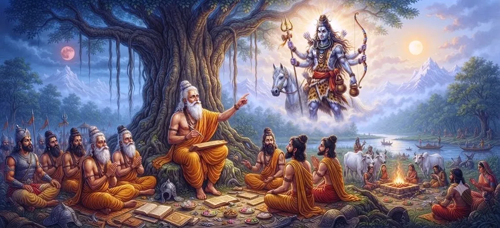

Vyasa's Instruction Concerning the Kirata Incarnation
Chapter 37 of the Shatarudra Samhita presents Vyasa's instruction concerning the Kirata incarnation of Lord Shiva. It prepares the reader for the sacred events that follow and gives the Kirata manifestation its proper spiritual context.
The chapter draws attention to the value of sacred instruction and the importance of recognizing divine purpose beyond outward appearance. Sacred guidance can prepare the seeker to approach an unexpected divine manifestation with humility, attention, and inner readiness.
Vyasa's instruction invites devotees to reflect on sacred guidance, humility, divine purpose, discernment, and spiritual preparation.
Chapter 37 Highlights
The Kirata Incarnation
Introduces Kirata as a powerful and complex figure associated with Shiva's divine manifestation.
Connection with Shiva
Explores the sacred tradition connecting Kirata with the power and presence of Lord Shiva.
Power and Austerity
Reflects on extraordinary strength, discipline, and the difficult path of spiritual restraint.
The Burden of Actions
Highlights how powerful actions carry consequences and why spiritual strength must be guided by discernment.
Anger and Self-Control
Shows the importance of mastering anger and destructive impulses rather than being ruled by them.
Divine Purpose and Reflection
Encourages reflection on destiny, duty, consequences, and the transforming power of divine remembrance.
Core Topics in This Chapter
The Kirata Incarnation
Chapter 37 presents Vyasa's instruction concerning the Kirata incarnation of Lord Shiva and prepares the reader for the sacred events that follow. The narrative invites reflection on the relationship between divine power, human action, duty, anger, and consequence.
The Kirata Incarnation
Kirata is traditionally associated with a portion or manifestation of Shiva's fierce power. This association gives the narrative a deeper theological dimension: extraordinary power is sacred, but its proper direction depends upon discipline, discernment, and the consequences of action.
Divine Purpose and Sacred Context
The story presents a personality marked by exceptional force and a remarkable destiny. Such strength can become a blessing when governed by wisdom, yet it can also become destructive when anger and attachment take control. The chapter therefore encourages reflection on the responsibility that accompanies power.
Instruction and Spiritual Preparation
Spiritual strength is not merely physical power. Discipline, endurance, concentration, and the ability to withstand difficulty are also forms of strength. The Kirata narrative reminds the seeker that inner power must be cultivated together with wisdom and self-restraint.
Humility Before the Divine
One of the strongest reflections arising from Kirata's story concerns anger and destructive action. Anger can overwhelm judgment and turn power into a source of suffering. Spiritual discipline asks the seeker to pause, discern, and restrain harmful impulses before acting.
Recognizing Divine Purpose
The narrative emphasizes that powerful deeds do not become free from consequence simply because the person performing them is extraordinary. Every action has a moral and spiritual weight. Awareness of consequence is therefore essential for anyone who possesses influence, strength, or authority.
Preparation for Arjuna's Penance
The connection with Shiva also points toward the possibility of transformation through divine remembrance. Remembering the Divine does not erase responsibility for past actions, but it can redirect the mind toward humility, reflection, restraint, and spiritual awareness.
Lessons for the Seeker
For the seeker, Kirata's story is a reminder that power must be accompanied by responsibility. Strength should protect rather than destroy, anger should be mastered rather than obeyed, and every important decision should be guided by discernment, duty, and remembrance of the Divine.
Key Teachings of Chapter 37
Listen to Sacred Guidance
Wisdom from a worthy guide prepares the mind for deeper understanding.
Look Beyond Appearance
Do not judge a sacred encounter solely by outward form or expectation.
Remain Humble
Remain humble when the Divine appears in unexpected ways.
Prepare Before Practice
Understand the purpose and discipline of spiritual practice.
Seek Inner Readiness
Join knowledge with sincerity, discipline, and inner readiness.
Trust the Divine Purpose
Allow sacred guidance to deepen understanding and prepare the mind.
Spiritual Reflection
Kirata's story presents a powerful meditation on the responsibility that accompanies extraordinary strength. Divine association does not remove the need for discernment, and power does not free anyone from the consequences of action. The seeker is encouraged to master anger, reflect before acting, fulfil duty responsibly, and keep remembrance of Shiva alive even in difficult circumstances. In this way, the narrative becomes not merely a story of power and destiny, but a lesson in self-control and spiritual awareness.
Living the Message
Before beginning an important spiritual practice, take time to understand its purpose and discipline. Give discernment time to guide the response instead of allowing impulse to decide.
Do not judge sacred experiences only by outward appearance. Strength, knowledge, influence, and authority become spiritually meaningful when they are used to protect, serve, and fulfil responsibility.
Seek reliable guidance and combine instruction with sincerity, patience, and self-control. Divine remembrance can create space for humility, reflection, restraint, and a wiser response.
Key Spiritual Concepts
A portion or aspect of a divine power or manifestation in traditional sacred narratives.
A name associated with Shiva's fierce and transformative aspect.
Disciplined spiritual effort undertaken for purification, endurance, and self-mastery.
Action together with the consequences arising from that action.
Anger; in spiritual teaching, an impulse that must be understood and restrained.
Remembrance of the Divine, especially through conscious recollection and devotion.
Chapter Summary
Shatarudra Samhita Chapter 37 presents Kirata in connection with Shiva's divine power and explores the difficult relationship between extraordinary strength, destiny, action, anger, and consequence. The chapter's central reflection is that power must be guided by wisdom and responsibility. The narrative encourages self-control, awareness of karma, disciplined use of one's abilities, and careful consideration before acting under the influence of anger. It also points toward divine remembrance as a source of reflection and spiritual awareness. For the seeker, Kirata's story becomes a reminder that strength is most meaningful when it is governed by discernment, duty, humility, and remembrance of Shiva.
Frequently Asked Questions
1. What is the main subject of Shatarudra Samhita Chapter 37?
Chapter 37 presents Vyasa's instruction concerning the Kirata incarnation of Lord Shiva and prepares the narrative for the events that follow.
2. What is the Kirata incarnation?
The Kirata incarnation refers to Shiva's divine manifestation in the form of a hunter or forest-dwelling Kirata within the sacred narrative.
3. Why is Vyasa's instruction important?
It provides sacred context and prepares the seeker to understand the deeper significance of the Kirata manifestation.
4. What spiritual lesson does the Kirata form teach?
It teaches humility and reminds the seeker that divine reality may appear beyond ordinary expectations.
5. How does Chapter 37 lead to the next chapter?
It establishes the sacred context that leads into The Description of Arjuna's Penance.
6. What comes after Chapter 37?
The next chapter is The Description of Arjuna's Penance.
“True strength is not merely the power to act, but the wisdom and restraint to act rightly.”
Continue Through Shatarudra Samhita
Chapter 37 presents Vyasa's instruction concerning the Kirata incarnation and prepares the sacred narrative for Arjuna's penance.